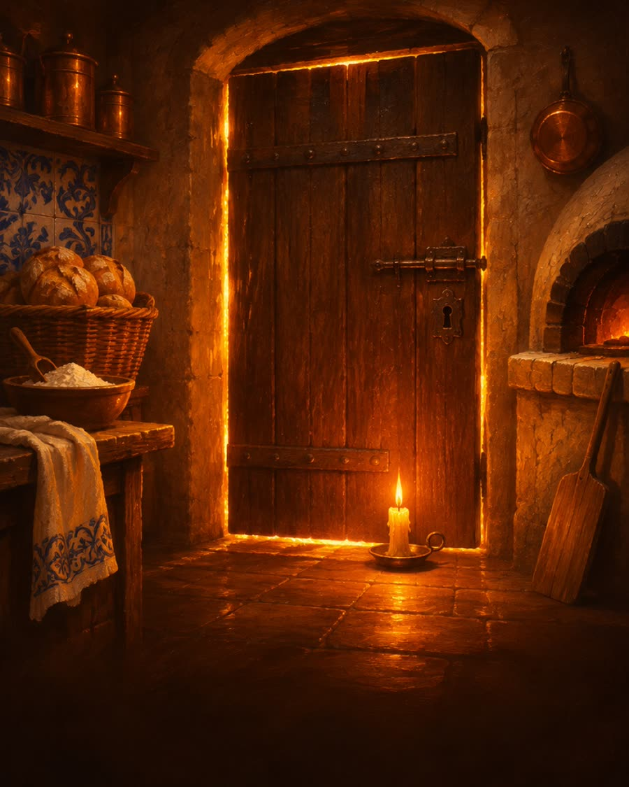

순례자의 한끼한밤
순례자의 한끼한밤리스본의 한 빵집은
1837년부터 레시피를 비밀로 지켜 왔습니다.
편의점에서도, 빵집에서도 쉽게 사 먹는 에그타르트. 포르투갈에서는 파스텔 드 나타(pastel de nata)라고 부릅니다. '크림 과자'라는 뜻이에요. 바삭한 겹겹의 껍질에 노란 커스터드가 담긴 이 과자는, 의외로 수도원 부엌에서 태어났습니다.
리스본의 한 수도원
리스본 서쪽 벨렝 지구에는 크고 화려한 제로니무스 수도원이 있습니다. 에그타르트는 이곳 수도사들이 처음 만들었다는 이야기가 가장 널리 알려져 있습니다.
왜 하필 수도원이었을까요? 전해지는 이야기가 있습니다. 당시 수도원에서는 달걀흰자로 옷을 빳빳하게 다렸다고 해요. 그러면 노른자가 잔뜩 남습니다. 그 노른자를 버리기 아까워 설탕과 섞어 과자를 만들었다는 거죠. 포르투갈 전통 과자 중에 노른자를 듬뿍 쓰는 것이 유난히 많은 것도 이런 사정과 관련이 있다고 합니다.
1834년, 수도원이 문을 닫다
1834년, 포르투갈에서 수도원들이 문을 닫게 됩니다. 수도사들은 먹고살 길을 찾아야 했고, 에그타르트 레시피는 수도원 옆 설탕 공장으로 넘어갔다고 전해집니다. (1820년대라고 적은 자료도 있지만, 1834년이 가장 많이 나옵니다.)
1837년, 비밀의 방
1837년, 그 자리에 빵집이 문을 엽니다. 이 가게는 지금도 수도원 근처에서 에그타르트를 굽고 있고, 레시피는 '비밀의 방'에 보관돼 극소수의 제빵사만 알고 있다고 합니다. 2026년 기준으로 189년째예요.

1837년부터 지금까지 지켜 온 비밀.
레시피를 아는 제빵사는 극소수라고 합니다.
그래서 리스본에 가면 사람들이 이 가게 앞에 길게 줄을 섭니다. 다른 가게들도 맛있는 나타를 굽지만, '원조의 맛'은 아직 그 방 안에 있는 셈이죠.
1989년, 마카오에서 아시아로
에그타르트가 아시아에 널리 퍼진 건 의외로 최근입니다. 1989년, 포르투갈 땅이던 마카오에서 영국인 제빵사 앤드루 스토가 원래 레시피 없이, 영국식 커스터드 타르트를 섞어 자기만의 에그타르트를 만들었습니다. 이게 큰 인기를 끌면서 홍콩과 아시아 곳곳으로 퍼졌어요.
에그타르트가 건너온 길
한국에 들어온 정확한 경로는 확인하지 못했지만, 우리가 편의점에서 사 먹는 에그타르트도 이 길의 끝 어딘가에 있을 겁니다.
한눈에 보는 연표
한눈에 보는 에그타르트의 길
- 옛날
리스본 벨렝의 수도원에서 노른자로 과자를 만듦
- 1834
수도원 폐쇄, 레시피가 옆 설탕 공장으로
- 1837
그 자리에 빵집 개업, 레시피는 지금도 비밀
- 1989
마카오에서 앤드루 스토가 자기만의 방식으로 구워 아시아에서 인기
오늘 밤 디저트로,
189년 된 비밀 한 입 어떠세요?
For pilgrims passing by
The Portuguese egg tart, pastel de nata, began in a monastery in Belém, Lisbon. One popular story says monks used egg whites to starch their clothes and turned the leftover yolks into sweets. When the monasteries closed in 1834, the recipe passed to a nearby sugar refinery, and in 1837 a bakery opened on the spot. Its recipe is still kept secret, 189 years later. In 1989 Andrew Stow, an English baker in Macau, created his own version, which became popular across Asia.
참고한 자료
- 제로니무스 수도원 기원설은 가장 널리 알려진 설명입니다
- 달걀흰자로 옷을 다렸다는 이야기는 전해지는 이야기입니다
- 수도원 폐쇄 연도는 1834년이 가장 많이 쓰이며, 다른 연도를 적은 자료도 있습니다
- Wikipedia 'Pastel de nata', SCMP·Macao Magazine의 마카오 에그타르트 기사 등
한끼한밤 이야기
🕯️ 오늘 밤 이야기는 여기까지.
다음 이야기는 천 년 전 순례자의 밥그릇, 가리비입니다.